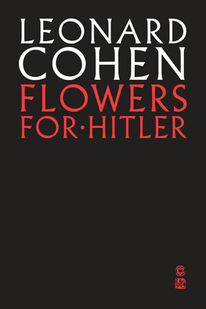

44:38 · 13 OPERE
Stalin descritto da Trotsky.
Il filo del discorso
La biografia di Stalin scritta da Trockij offre al relatore un terreno per discutere tirannide, memoria e interpretazione. Presenta una copia Harper&Brothers del 1946, ne legge la storia editoriale e la affianca al libro di Ettore Cinnella sulla carestia ucraina. Insiste sul valore di una testimonianza prodotta da un protagonista e avversario politico, ma invita a confrontarla con altre fonti e a costruire un giudizio autonomo.
Leggi la sintesi completaRiduci la sintesi
Il percorso passa dal Menone alla distinzione fra letture legittime e arbitrarie, poi torna al ritratto di Stalin, alla paura della parola scritta e alla riscrittura della storia. Cohen, Orwell e l’episodio socratico del rifiuto di un ordine dei Trenta accompagnano l’argomento. La conclusione contrappone il potere come dominio personale a esempi di rinuncia alla carica. La scheda mantiene attribuiti i paralleli con i governanti contemporanei e chiarisce che anche l’edizione 1946 incorpora interventi postumi: una testimonianza preziosa richiede critica delle fonti, non adesione automatica al suo ritratto politico o psicologico.
I libri nel discorso

Stalin: An Appraisal of the Man and His Influence
Note sul riferimento
Copertina: Harper & Brothers, New York, 1946; a cura e in traduzione di Charles Malamuth, xv e 516 pagine secondo la recensione contemporanea. Immagine della sovraccoperta Harper attribuita al 1946; non prova della specifica tiratura posseduta dal relatore.
Immagine autentica dell’opera, controllata visivamente; l’edizione di riferimento non è attribuita al filmato.
Biografia di Stalin scritta da Trockij, copia Harper&Brothers 1946 dichiarata a 0:24.

Ucraina. Il genocidio dimenticato (1932–1933)
Note sul riferimento
Copertina: Della Porta Editori, collana Sentieri,304 pagine, ISBN 9788896209172. Copertina corrente del catalogo editoriale con la figura della bambina del memoriale; non è attribuita al filmato una precisa tiratura.
Immagine autentica dell’opera, controllata visivamente; l’edizione di riferimento non è attribuita al filmato.
Ettore Cinnella esplicito; genocidio ucraino e sottotitolo genocidio dimenticato a 6:51–7:22 identificano il volume.

Omaggio alla Catalogna
Note sul riferimento
Copertina: Bompiani, 2022 · edizione di riferimento
Omaggio alla Catalogna di Orwell esplicito nel discorso sulla Spagna.

Risposta alla domanda: che cos’è l’Illuminismo?
Identificazione probabile
Note sul riferimento
Copertina della raccolta che comprende il saggio sull’Illuminismo: Firenze University Press · Sette scritti politici liberi · 2011 · a cura di Maria Chiara Pievatolo
Copertina del volume cartaceo FUP che comprende il saggio, riscontrato dal catalogo universitario. L’ISBN appartiene alla raccolta; il filmato non annuncia un’edizione e il titolo del saggio è un’identificazione probabile della citazione.
Sapere aude e Kant: probabile richiamo al saggio 1784, titolo non pronunciato.

Menone
Note sul riferimento
Copertina: Bompiani · Testi a fronte · 2000
Copertina autentica dell’edizione di riferimento, controllata visivamente. Non identifica l’esemplare letto o citato nel video.
Il Menone è nominato esplicitamente come dialogo cui partecipare attraverso la lettura.

Vangelo secondo Luca
Note sul riferimento
Copertina del volume completo: San Paolo, 2014 · Nuova Versione dai Testi Antichi · edizione di riferimento
Vangelo secondo Luca è un libro della Bibbia. L’immagine mostra il volume completo San Paolo di riferimento, non un’edizione autonoma del singolo libro e non una versione identificata nella citazione.
Vangelosecondo Luca nominato in un esempio ipotetico su Charles Manson, non una dichiarazione storica accertata.
Vangelo secondo Matteo
Note sul riferimento
Copertina del volume completo: San Paolo, 2014 · Nuova Versione dai Testi Antichi · edizione di riferimento
Vangelo secondo Matteo è un libro della Bibbia. L’immagine mostra il volume completo San Paolo di riferimento, non un’edizione autonoma del singolo libro e non una versione identificata nella citazione.
Vangelosecondo Matteo esplicito nell’esempio sulle interpretazioni attribuite ai santi.

Libro di Mormon
Note sul riferimento
Copertina: Church Distribution · edizione italiana di riferimento
Copertina reale di riferimento; l’edizione non è identificata come quella citata nel video.
Libro di Mormon esplicito fra gli esempi polemici del relatore.

All There Is to Know About Adolph Eichmann
Identificazione probabile
Note sul riferimento
Copertina della raccolta che contiene la poesia: Poesia inclusa in Flowers for Hitler,1964. L’immagine mostra la raccolta nella brossura McClelland&Stewart del 2 ottobre 2018, ISBN 9780771024511; non è la copertina di un volume autonomo intitolato alla poesia.
La voce riguarda la poesia; l’immagine è la raccolta Flowers for Hitler, edizione 2018. La raccolta non è un secondo riferimento autonomo attribuito al filmato.
Leonard Cohen ed Eichmann con caratteristiche medie: riscontro nella poesia All There Is To Know About Adolph Eichmann; titolo non pronunciato.

La Repubblica
Identificazione probabile
Note sul riferimento
Copertina: Laterza · La Repubblica · edizione con testo a fronte di riferimento
Immagine associata all’ISBN di riferimento e controllata visivamente; edizione e traduzione non identificate come quelle citate o lette nel video.
Platone e ritratto del tiranno: probabile collegamento al libro IX della Repubblica, con ritorno al governante riluttante a 42:42; titolo non pronunciato.

Looking Back on the Spanish War
Identificazione probabile
Note sul riferimento
Copertina: Página Indómita, 2025
Copertina della raccolta che contiene Looking Back on the Spanish War in traduzione spagnola, come documentato dai titoli originali nel campione dell'editore. Edizione illustrativa, non identificata nel video.
Orwell e la realtà di un bombardamento dipendente dal vincitore: probabile richiamo al saggio, titolo non pronunciato.

1984
Note sul riferimento
Copertina: Newton Compton · edizione illustrativa
1984 di Orwell esplicito nel discorso sulla cancellazione della storia.

Apologia di Socrate
Identificazione probabile
Note sul riferimento
Copertina del volume Apologia di Socrate. Critone: BUR · Apologia di Socrate. Critone · a cura di Maria Michela Sassi, 1993
Copertina autentica del volume BUR contenente Apologia di Socrate e Critone. Il secondo titolo non è aggiunto come citazione del video; l’autore del testo è Platone, con Socrate come figura protagonista.
Ordine dei Trenta e rifiuto di Socrate: riscontro nell’Apologia 32 c–e, titolo non pronunciato.